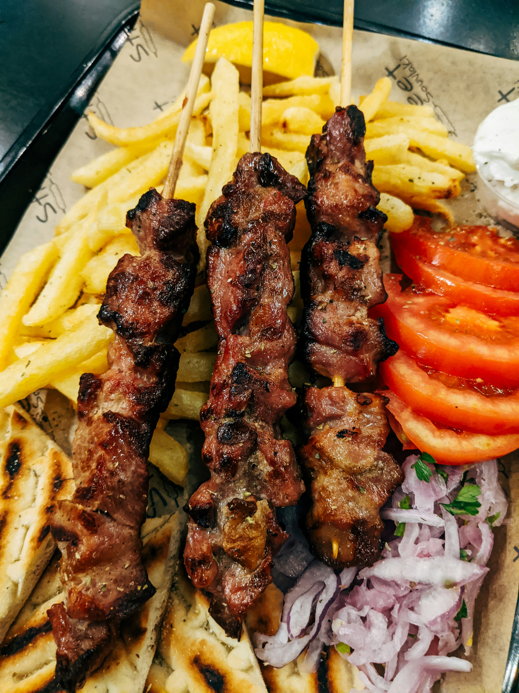

Kebab

Description
Kebab is a popular grilled dish made from seasoned meat, vegetables, or a combination of both. It is known for its smoky flavor, juicy texture, and rich blend of spices.
Kebabs can be cooked on skewers over a grill, baked, or pan-fried, and they are commonly served with chutney, salad, naan, or rice.
Ingredients
- 500 grams minced meat (chicken, beef, or lamb)
- 1 medium onion, finely chopped
- 2-3 green chilies, chopped
- 2 tablespoons fresh coriander, chopped
- 1 tablespoon fresh mint leaves, chopped
- 1 tablespoon ginger-garlic paste
- 1 teaspoon cumin powder
- 1 teaspoon coriander powder
- 1 teaspoon red chili powder
- ½ teaspoon black pepper powder
- 1 teaspoon garam masala
- 1 egg (optional, for binding)
- 2 tablespoons breadcrumbs or roasted flour
- Salt to taste
- 2 tablespoons oil for grilling or frying
Steps to Follow
- Add minced meat to a bowl and mix it with onion, green chilies, coriander, mint, and ginger-garlic paste.
- Add cumin powder, coriander powder, red chili powder, black pepper, garam masala, and salt. Mix well so the spices are evenly combined.
- Add egg and breadcrumbs (or roasted flour) to help bind the mixture. Knead the mixture for a few minutes.
- Cover and refrigerate the mixture for 30 minutes to allow the flavors to develop.
- Shape the mixture into small kebabs using your hands or place it onto skewers.
- Heat a grill, pan, or barbecue and brush it lightly with oil.
- Cook the kebabs for about 5-7 minutes on each side until they are fully cooked and have a golden, slightly charred surface.
- Serve hot with chutney, salad, naan, or your favorite side dish.
Go Back to Home Page